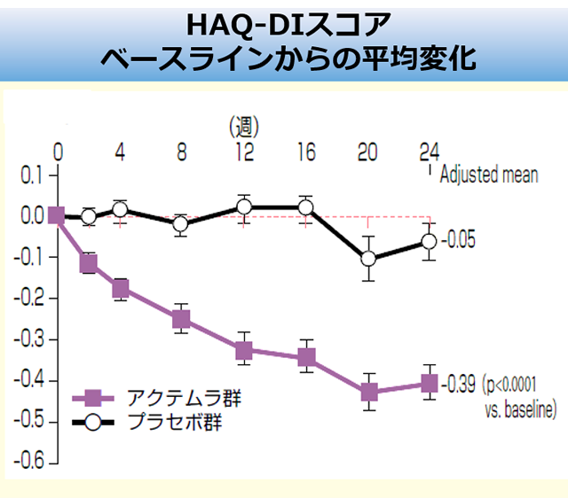
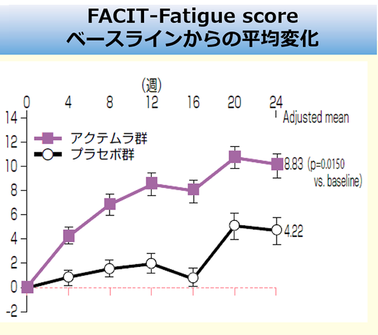

TNF効果不十分例へのアクテムラ投与により、24週後のQOL関連指標が有意に改善（RADIATE Study サブ解析）
【目的】TNF阻害薬効果不十分のRA患者へのACTの患者関連結果を調査する
【対象】1剤以上のTNF阻害薬で効果不十分な、罹病期間6ヶ月以上のRA患者489名
【方法】MTX併用下でプラセボ群、アクテムラ群（8mg/kg）に無作為割付。アクテムラ8mg/kgは 4週間隔で計6回点滴投与（24週間）。24週後までのPROsの平均変化を解析した。


TNF阻害薬効果不十分例であっても、アクテムラは生活の質や疲労度を改善することができる